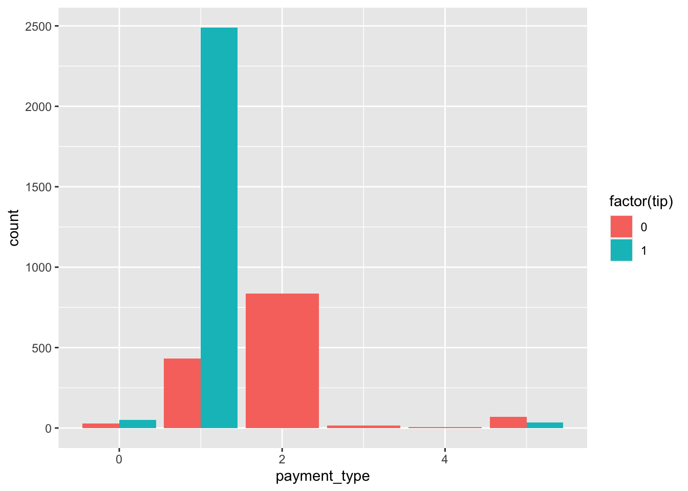
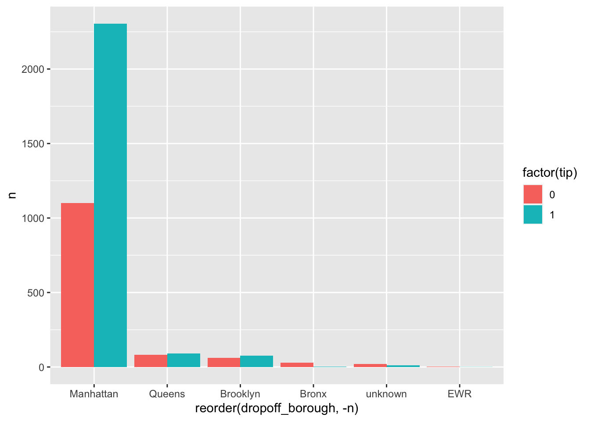

Chapter 4 [Model 1]
Split into test and train:
## X.1 X VendorID tpep_pickup_datetime tpep_dropoff_datetime
## 2885 2909 12405440 2 07/03/2021 07:28:51 PM 07/03/2021 07:37:38 PM
## 10 10 7142653 2 05/05/2021 11:30:48 AM 05/05/2021 11:50:01 AM
## 3208 3234 18732634 2 09/11/2021 07:30:46 PM 09/11/2021 07:46:37 PM
## 3649 3678 29380007 2 12/15/2021 07:52:46 AM 12/15/2021 08:16:21 AM
## 4464 4502 25171931 2 11/09/2021 02:29:21 PM 11/09/2021 03:03:43 PM
## 735 741 25126790 2 11/09/2021 06:40:41 AM 11/09/2021 06:48:09 AM
## passenger_count trip_distance RatecodeID store_and_fwd_flag PULocationID
## 2885 1 0.00 1 N 231
## 10 1 2.38 1 N 236
## 3208 2 1.57 1 N 231
## 3649 1 2.58 1 N 162
## 4464 1 3.64 1 N 163
## 735 1 1.85 1 N 239
## DOLocationID payment_type fare_amount extra mta_tax tip_amount
## 2885 246 1 6.5 0 0.5 1.47
## 10 164 1 13.5 0 0.5 5.04
## 3208 79 1 11.0 0 0.5 2.86
## 3649 239 1 15.5 0 0.5 2.82
## 4464 163 1 22.0 0 0.5 25.30
## 735 230 1 8.0 0 0.5 2.00
## tolls_amount improvement_surcharge total_amount congestion_surcharge
## 2885 0 0.3 11.27 2.5
## 10 0 0.3 21.84 2.5
## 3208 0 0.3 17.16 2.5
## 3649 0 0.3 21.62 2.5
## 4464 0 0.3 50.60 2.5
## 735 0 0.3 13.30 2.5
## tipped tip_percent tip high_fare pickup dropoff
## 2885 1 0.2261538 1 0 2021-07-03 19:28:51 2021-07-03 19:37:38
## 10 1 0.3733333 1 0 2021-05-05 11:30:48 2021-05-05 11:50:01
## 3208 1 0.2600000 1 0 2021-09-11 19:30:46 2021-09-11 19:46:37
## 3649 1 0.1819355 1 0 2021-12-15 07:52:46 2021-12-15 08:16:21
## 4464 1 1.1500000 1 1 2021-11-09 14:29:21 2021-11-09 15:03:43
## 735 1 0.2500000 1 0 2021-11-09 06:40:41 2021-11-09 06:48:09
## duration season pickup_borough dropoff_borough
## 2885 8.783333 summer Manhattan Manhattan
## 10 19.216667 spring Manhattan Manhattan
## 3208 15.850000 autumm Manhattan Manhattan
## 3649 23.583333 winter Manhattan Manhattan
## 4464 34.366667 autumm Manhattan Manhattan
## 735 7.466667 autumm Manhattan ManhattanIn this model, I decided to use a OneR model to see which of the features would be most “important” in minimizing prediction error. How it works is that for each predictor that I feed the model, it generates “one rule,” and at the end it selects the rule that minimizes error. In this case, I decided to try pickup borough, dropoff borough, passenger count, high fare, season, rate code ID, and vendor ID.
- pickup borough/dropoff borough: I thought this may be important in that people whose destinations/origins are different boroughs may have different tipping habits.
- passenger count: my hypothesis was that for rides with higher passenger counts, the tip might be higher. This was somewhat disproved in my EDA, but I wanted to include it in my OneR.
- high fare: I wanted to see whether or not rides with higher fares may tip higher, or if rides with lower fares tip higher proportionally to the fare.
- season: my hypothesis was that maybe rides in the winter (where it’s less convenient to walk/take public transporation) may be tipped higher.
- rate code ID: this represents different types of ride such as “standard” or rides to EWR/JFK. Maybe people who take rides with set fares (like those to the airports) consistently tip at 15-20% because they know exactly what to expect.
- vendor ID: this data represents two different taxi companies. Maybe one has a consistently higher level of service corresponding to better tips for their drivers.
Above, I’ve listed the reasons for why I included specific features. But as a reminder, OneR will only choose ONE of the above predictors as the one that minimizes error. We’ll see which one does the best job when we run the model.
##
## Call:
## OneR.formula(formula = factor(tip) ~ pickup_borough + dropoff_borough +
## passenger_count + high_fare + season + RatecodeID + VendorID,
## data = train_dat)
##
## Rules:
## If dropoff_borough = Bronx then factor(tip) = 0
## If dropoff_borough = Brooklyn then factor(tip) = 1
## If dropoff_borough = EWR then factor(tip) = 0
## If dropoff_borough = Manhattan then factor(tip) = 1
## If dropoff_borough = Queens then factor(tip) = 1
## If dropoff_borough = unknown then factor(tip) = 0
##
## Accuracy:
## 2524 of 3783 instances classified correctly (66.72%)
##
## Contingency table:
## dropoff_borough
## factor(tip) Bronx Brooklyn EWR Manhattan Queens unknown Sum
## 0 * 29 60 * 3 1099 83 * 19 1293
## 1 4 * 76 1 * 2305 * 92 12 2490
## Sum 33 136 4 3404 175 31 3783
## ---
## Maximum in each column: '*'
##
## Pearson's Chi-squared test:
## X-squared = 80.442, df = 5, p-value = 6.782e-16## [1] 0.6596067## [1] 0.6673387Interestingly, I have an accuracy of 66% for the training data, and an even higher accuracy of 66.7% for the test data. Compared to an overall frequency of 64.8% for tipped > 15%, this doesn’t seem like that much of an information gain and the test accuracy being higher is a little odd.
Something interesting came up with the OneR function as I was running this. I noticed that for the Brooklyn column, OneR classified it as 1 when from my explorations, I knew that Brooklyn should have been classified as 0 since there were more instances of 0 than 1 in the data.
 As we can see, the relative frequencies for Brooklyn were 88 for 0 and 86 for 1, which means that OneR should have classified Brooklyn as 0 instead of 1 as it did in the model. However, OneR said there were 60 instances of 0 and 76 instances of 1 in the data. Why were some of the data points missing?

Now that we’ve removed all the rows with NA, we see the same results that OneR showed in the summary. It turns out this was all because the OneR function has been tossing any rows with NAs in it. This was good to know, and maybe this should have been more clear in the documentation!
Based on the OneR analysis, it seems that dropoff borough is the most important in determining whether or not a rider will tip over 15% on their ride, and it categorizes at 66.7% accuracy. However, we already know that 65% of all rides are classified as over 15% tip so we’re not sure how much information we’re gaining. As we can see from the plot, there are 5 categories (Bronx, Brooklyn, Manhattan, Queens, and unknown borough). Riders who are picked up in Manhattan have the highest rate of tipping over 15%, and riders who are picked up from the Bronx have the lowest rate of tipping over 15%. This made sense intuitively when I looked up the median household income for the different boroughs after making this plot. Highest to lowest median income goes Manhattan, Staten Island, Queens, Brooklyn, then Bronx which is the same order for tipping >15% in this plot.
For each borough, it’s showing the relative frequencies which shows that Manhattan has the most rides. It also shows very few data points for EWR, Bronx, and unknown. It’s possible that those with fewer points would be skewed towards more 0’s than 1’s so that’s something to keep in mind.